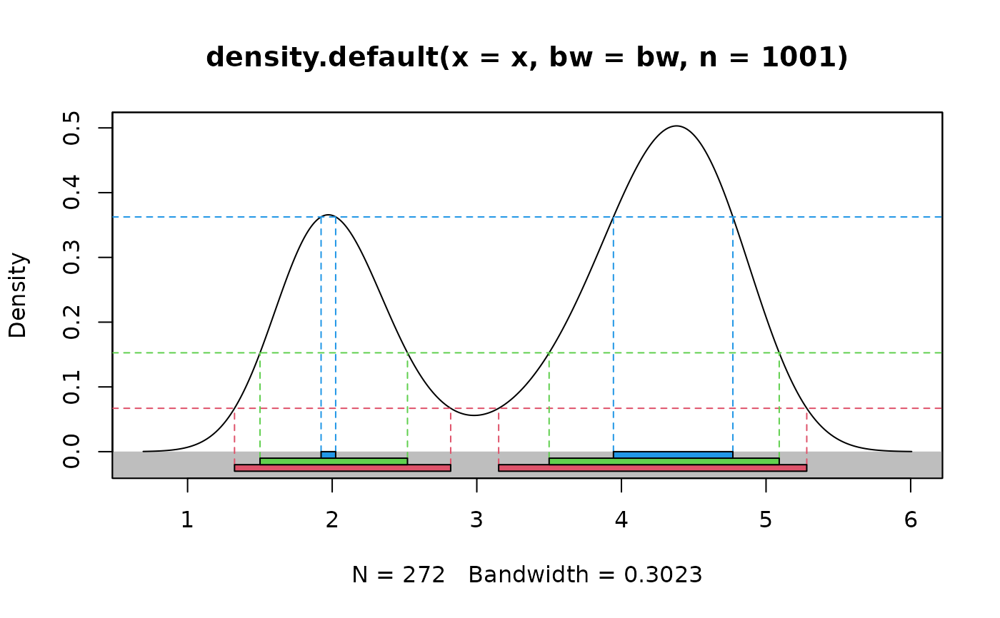
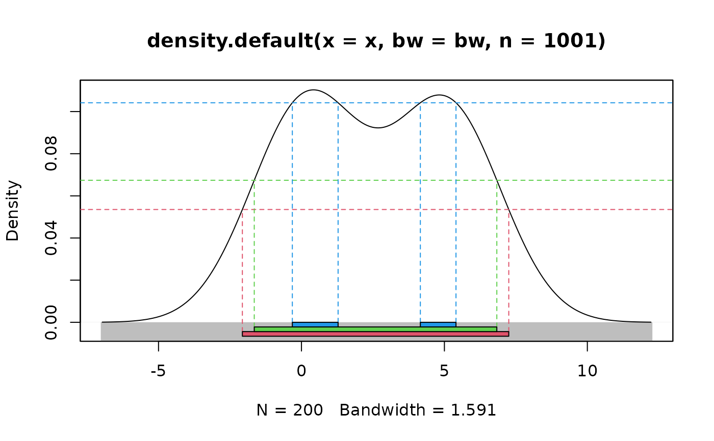

Plots univariate density with highest density regions displayed
Arguments
- x
Numeric vector containing data. If
xis missing thendenmust be provided, and the HDR is computed from the given density.- prob
Probability coverage required for HDRs
- den
Density of data as list with components
xandy. If omitted, the density is estimated fromxusingdensity.- h
Optional bandwidth for calculation of density.
- lambda
Box-Cox transformation parameter where
0 <= lambda <= 1.- xlab
Label for x-axis.
- ylab
Label for y-axis.
- ylim
Limits for y-axis.
- plot.lines
If
TRUE, will show how the HDRs are determined using lines.- col
Colours for regions.
- bgcol
Colours for the background behind the boxes. Default
"gray", ifNULLno box is drawn.- legend
If
TRUEadd a legend on the right of the boxes.- ...
Other arguments passed to plot.
Value
a list of three components:
- hdr
The endpoints of each interval in each HDR
- mode
The estimated mode of the density.
- falpha
The value of the density at the boundaries of each HDR.
Details
Either x or den must be provided. When x is provided,
the density is estimated using kernel density estimation. A Box-Cox
transformation is used if lambda!=1, as described in Wand, Marron and
Ruppert (1991). This allows the density estimate to be non-zero only on the
positive real line. The default kernel bandwidth h is selected using
the algorithm of Samworth and Wand (2010).
Hyndman's (1996) density quantile algorithm is used for calculation.
References
Hyndman, R.J. (1996) Computing and graphing highest density regions. American Statistician, 50, 120-126.
Samworth, R.J. and Wand, M.P. (2010). Asymptotics and optimal bandwidth selection for highest density region estimation. The Annals of Statistics, 38, 1767-1792.
Wand, M.P., Marron, J S., Ruppert, D. (1991) Transformations in density estimation. Journal of the American Statistical Association, 86, 343-353.
Examples
# Old faithful eruption duration times
hdr.den(faithful$eruptions)

#> $hdr
#> [,1] [,2] [,3] [,4]
#> 99% 1.324490 2.819318 3.151221 5.281620
#> 95% 1.500907 2.520597 3.499998 5.091225
#> 50% 1.923120 2.024131 3.944441 4.770834
#>
#> $mode
#> [1] 4.381316
#>
#> $falpha
#> 1% 5% 50%
#> 0.06701714 0.15263754 0.36215988
#>
# Simple bimodal example
x <- c(rnorm(100,0,1), rnorm(100,5,1))
hdr.den(x)

#> $hdr
#> [,1] [,2] [,3] [,4]
#> 99% -2.2258674 7.392098 NA NA
#> 95% -1.5177624 6.710389 NA NA
#> 50% -0.4300996 1.090166 4.339578 5.606155
#>
#> $mode
#> [1] 0.2941976
#>
#> $falpha
#> 1% 5% 50%
#> 0.04932224 0.07409836 0.10574658
#>